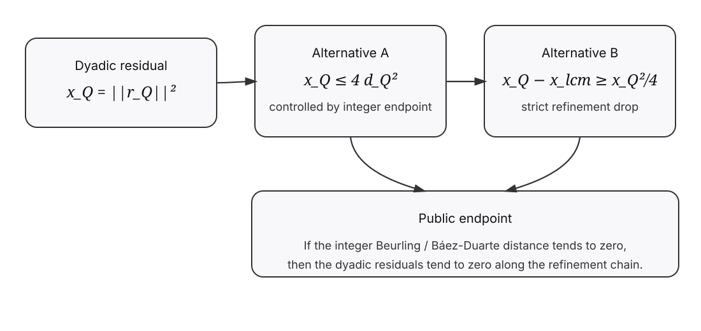
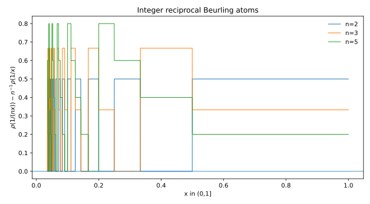
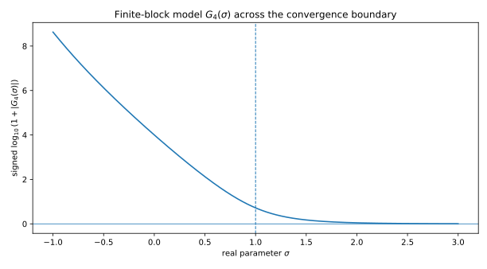
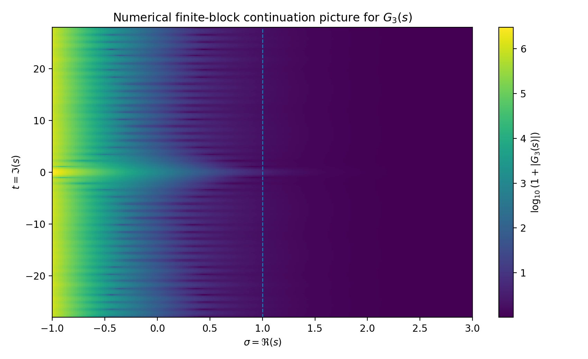

A Dyadic-to-Integer Beurling Reduction
A preliminary research note on a reciprocal Nyman--Beurling refinement and its reduction to the integer Beurling/Baez-Duarte endpoint.
Main idea
Let $\mathcal H=L^2((1,\infty),y^{-2}dy)$ and define Beurling atoms
$$F_\alpha(y)=\alpha\lfloor y\rfloor-\lfloor \alpha y\rfloor.$$For dyadic denominators $Q$, define $V_Q$ as the span of the atoms $F_{a/Q}$ and let $r_Q$ be the residual of $1$ after projection onto $V_Q$, with $x_Q=\|r_Q\|^2$.
The note studies the reciprocal subspace generated by $F_{1/n}$ for $2\le n\le Q$. Since these reciprocal atoms live in the larger denominator space $V_{\mathrm{lcm}(1,\dots,Q)}$, they can be used as an admissible refinement direction.
Public visual summary
These figures are explanatory only. They summarize the deployed reduction and do not include any later contradiction-route research.


Projection dichotomy
Let $d_Q$ be the distance from $1$ to the reciprocal integer Beurling subspace. The main reduction proves that either
$$x_Q\le 4d_Q^2,$$or
$$x_Q-x_{\mathrm{lcm}(1,\dots,Q)}\ge \frac14x_Q^2.$$Thus, if the integer Beurling distance $d_Q\to0$, then the dyadic residuals $x_Q\to0$, and RH follows by the Nyman--Beurling criterion.
Endpoint
Under the isometry $x=1/y$,
$$F_{1/n}(1/x)=\rho(1/(nx))-\frac1n\rho(1/x),$$where $\rho(t)$ denotes the fractional part of $t$. Therefore the endpoint is the integer Beurling / Baez-Duarte approximation criterion, not a new independent proof of RH.
Related numerical visualization of $G(s)$
This section is included as a visual supplement to the earlier reversal-across-the-decimal exploration. It is not used in the dyadic-to-integer reduction above.
For a fixed digit length $k$, let $\operatorname{rev}_k(n)$ denote fixed-width digit reversal. The plotted finite-block model is
$$G_K(s)=\sum_{k=1}^{K}\sum_{10^{k-1}\le n<10^k}\left(\frac{\operatorname{rev}_k(n)}{10^k n}\right)^s.$$Each $G_K$ is an entire finite sum. The plots below should be read as a numerical continuation picture for finite approximants, not as a theorem proving analytic continuation of the infinite series.


Files
paper/dyadic_to_integer_beurling_reduction.pdf— main research note.paper/dyadic_to_integer_beurling_reduction.tex— LaTeX source.docs/CLAIM_STATUS.md— claim status and limitations.docs/REVIEW_REQUEST.md— reviewer-facing summary.docs/AUTHOR_NOTE.md— author note and motivation.docs/GRAPH_BOUNDARY.md— public graph boundary and figure notes.
Request for review
Feedback is especially welcome on the unit-step visibility lemma, the projection dichotomy, and the identification of the endpoint with the integer Beurling/Baez-Duarte framework.